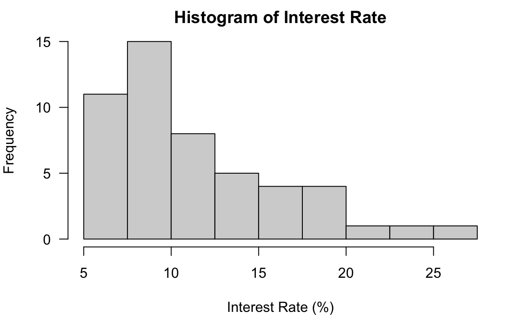

# install.packages("openintro")
library(openintro)
str(loan50)
# tibble [50 × 18] (S3: tbl_df/tbl/data.frame)
# $ state : Factor w/ 51 levels "","AK","AL","AR",..: 32 6 41 6 36 16 35 25 11 11 ...
# $ emp_length : num [1:50] 3 10 NA 0 4 6 2 10 6 3 ...
# $ term : num [1:50] 60 36 36 36 60 36 36 36 60 60 ...
# $ homeownership : Factor w/ 3 levels "rent","mortgage",..: 1 1 2 1 2 2 1 2 1 2 ...
# $ annual_income : num [1:50] 59000 60000 75000 75000 254000 67000 28800 80000 34000 80000 ...
# $ verified_income : Factor w/ 4 levels "","Not Verified",..: 2 2 4 2 2 3 3 2 2 3 ...
# $ debt_to_income : num [1:50] 0.558 1.306 1.056 0.574 0.238 ...
# $ total_credit_limit : int [1:50] 95131 51929 301373 59890 422619 349825 15980 258439 87705 330394 ...
# $ total_credit_utilized : int [1:50] 32894 78341 79221 43076 60490 72162 2872 28073 23715 32036 ...
# $ num_cc_carrying_balance: int [1:50] 8 2 14 10 2 4 1 3 10 4 ...
# $ loan_purpose : Factor w/ 14 levels "","car","credit_card",..: 4 3 4 3 5 5 4 3 3 4 ...
# $ loan_amount : int [1:50] 22000 6000 25000 6000 25000 6400 3000 14500 10000 18500 ...
# $ grade : Factor w/ 8 levels "","A","B","C",..: 3 3 6 3 3 3 5 2 2 4 ...
# $ interest_rate : num [1:50] 10.9 9.92 26.3 9.92 9.43 ...
# $ public_record_bankrupt : int [1:50] 0 1 0 0 0 0 0 0 0 1 ...
# $ loan_status : Factor w/ 7 levels "","Charged Off",..: 3 3 3 3 3 3 3 3 3 3 ...
# $ has_second_income : logi [1:50] FALSE FALSE FALSE FALSE FALSE FALSE ...
# $ total_income : num [1:50] 59000 60000 75000 75000 254000 67000 28800 80000 34000 192000 ...4 Data Visualization
In this chapter, we talk about how to visualize our data using R. We use basic statistical graphics for displaying categorical and numerical data, and showing their frequency distribution graphically. There are various visualization and chart types out there, and data visualization itself could be an one-semester course. 1 Please google for more online resources.
The most popular R package for graphics is ggplot2 that is one of the packages in the tidyverse ecosystem. This book does not use tidyverse syntax, and use the default base R syntax to do all the statistical computations including graphics. While tidyverse is getting popular, and has become the default way of doing data science, the Base R methods still have some advantages, and worth learning for R beginners. 2
4.1 Frequency Table for Categorical Variable
For a categorical variable data, we usually summarize its information in terms of a frequency table (frequency distribution)3 that lists its variable “values” (categories) individually along with their corresponding number of times occurred in the data (frequencies or counts). Below is a general format of a frequency table for categorical data with \(n\) being the total number of data values. It is also called one-way count table where one-way refers to one categorical variable being considered in the table. In the table, the variable has \(k\) categories, \(C_1, \dots, C_k\), and \(C_i\) occurs \(f_i\) times in the data, \(i = 1, \dots, k\). Relative frequency on the right is the proportion of the number of times a category occurs to the total number of data values. Relative frequency is closely related to the idea of probability that is discussed in Chapter 6.
| Category name | Frequency | Relative Frequency |
|---|---|---|
| \(C_1\) | \(f_1\) | \(f_1/n\) |
| \(C_2\) | \(f_2\) | \(f_2/n\) |
| … | … | … |
| \(C_k\) | \(f_k\) | \(f_k/n\) |
We can also make a frequency table with Category and Frequency shown in rows as long as every category and its corresponding counts are correctly shown in the table.
Below is an concrete example of a categorical variable color that has three categories.
| Category name | Frequency | Relative Frequency |
|---|---|---|
| Red üî¥ | 8 | 8/50 = 0.16 |
| Blue üîµ | 26 | 26/50 = 0.52 |
| Black ⚫ | 16 | 16/50 = 0.32 |
The relative frequency of “red” tells us that color red appears 16% of the time in the data that has totally \(8+26+16 = 50\) objects.
Categorical Frequency Table in R
Below is the loan50 data set from the openintro package in R. The data set has 50 subjects with 18 variables. We construct a categorical frequency table using the variable homeownership.
Note that a categorical variable in R is of either type factor or character. homeownership is of type factor that has three categories “rent”, “mortgage” and “own”. In the code I create another object x that stores homeownership data.
(x <- loan50$homeownership)
# [1] rent rent mortgage rent mortgage mortgage rent mortgage
# [9] rent mortgage rent mortgage rent mortgage rent mortgage
# [17] rent rent rent mortgage mortgage mortgage mortgage rent
# [25] mortgage rent mortgage own mortgage mortgage rent mortgage
# [33] mortgage rent rent own mortgage rent mortgage rent
# [41] mortgage rent rent mortgage mortgage mortgage mortgage rent
# [49] own mortgage
# Levels: rent mortgage ownWe can simply use the function table() to create the frequency table for the variable homeownership.
## frequency table
table(x)
# x
# rent mortgage own
# 21 26 3The frequency table can be constructed as R matrix. The relative frequency is computed using the count vector freq divided by the total number of observations, which is sum of counts of each category. Finally we can combine the frequency and relative frequency together by columns using cbind().
Visualizing a Frequency Table
Bar Chart
To visualizing the categorical data, we usually turn its frequency table into a plot. Such plot is called the bar chart. Each bar stands for one category of the variable, and the height of the bar indicates the frequency. Below is a bar chart that visualizes the homeownership frequency table. In R, we use the function barplot() to make a bar chart. In the first argument height, remember to put the frequency table of our data vector, not the data vector itself. As the basic plotting, we can add the title using main argument, and \(x\) label using xlab.
Pie Chart
The homeownership frequency table can also be visualized using a pie chart, especially when we want to see the proportion or distribution of the count of category. In R, simply use pie() function with the frequency table as the argument.
4.2 Frequency Distribution for Numerical Variables
It is not that straightforward as categorical data when we create a frequency distribution for a numerical variable. Categorical variables have natural separated or non-overlapping categories that we can count the number for, but numerical variables don’t have such natural divisions. We may have the numerical data so that every data value is shown just once, like \((2.3, 4.5, 4.6, 4.8, 2.8, 5.9)\), and summarizing the data like
#
# 2.3 2.8 4.5 4.6 4.8 5.9
# 1 1 1 1 1 1does not make sense because it does not give us how the data are generally distributed.
In order to create a more meaningful frequency table of numerical data, we first need to divide the data into several groups. Therefore, we are able to see which groups contain more data values than others, and understand the general pattern of the distribution of data.
We sort of convert numerical data into categorical one. The procedure is as follows.
Decide the number of non-overlapping groups of intervals \(k\), or classes for dividing the data. The non-overlapping property makes sure that one value belongs one and only one class, like categorical data.
Convert the data into \(k\) categories with an associated class interval. We need to know the upper and lower limit of each interval, so that we know which interval or class a data value belongs to.
Count the number of measurements falling in a given class interval (class frequency). After this we know the number of data points falling in each class interval, and this gives us the frequency distribution for a numerical variable.
The general format of the frequency distribution of numerical data is shown below.
| Class | Class Interval | Frequency | Relative Frequency |
|---|---|---|---|
| \(1\) | \([a_1, a_2]\) | \(f_1\) | \(f_1/n\) |
| \(2\) | \((a_2, a_3]\) | \(f_2\) | \(f_2/n\) |
| … | … | … | … |
| \(k\) | \((a_k, a_{k+1}]\) | \(f_k\) | \(f_k/n\) |
Note that the interval \([a_1, a_2]\) includes \(a_2\), but \((a_2, a_3]\) does not. So if there is a data point having value \(a_2\), it is in Class 2, not Class 1. Same logic for other intervals. Such open and closed intervals guarantees the non-overlapping property.
Notice that all class widths are the same! That is, \((a_2 - a_1) = (a_3 - a_2) = \cdots = (a_{k+1} - a_k)\). It is not allowed to have some classes have a larger range of numbers, and some have a smaller range.
| Grade | Percentage |
|---|---|
| A | [94, 100] |
| A- | [90, 94) |
| B+ | [87, 90) |
| B | [83, 87) |
| B- | [80, 83) |
| C+ | [77, 80) |
| C | [73, 77) |
| C- | [70, 73) |
| D+ | [65, 70) |
| D | [60, 65) |
| F | [0, 60) |
Interest Rate Data
We use interest rate variable in the loan 50 data set for demonstrating frequency distribution and graphics for numerical data.
int_rate <- round(loan50$interest_rate, 1)
int_rate
# [1] 10.9 9.9 26.3 9.9 9.4 9.9 17.1 6.1 8.0 12.6 17.1 5.3 7.3 5.3 8.0
# [16] 24.9 18.1 10.4 8.0 19.4 14.1 20.0 9.4 9.9 10.9 5.3 6.7 15.0 12.0 12.6
# [31] 10.9 9.4 9.9 7.3 18.4 17.1 8.0 6.1 6.7 7.3 12.6 16.0 10.9 9.9 9.4
# [46] 10.4 21.4 10.9 9.4 6.1
Frequency Distribution of Interest Rate
A frequency distribution of the interest rate data is created using R and shown below.
# Class Class_Intvl Freq Rel_Freq
# 1 5%-7.5% 11 0.22
# 2 7.5%-10% 15 0.30
# 3 10%-12.5% 8 0.16
# 4 12.5%-15% 5 0.10
# 5 15%-17.5% 4 0.08
# 6 17.5%-20% 4 0.08
# 7 20%-22.5% 1 0.02
# 8 22.5%-25% 1 0.02
# 9 25%-27.5% 1 0.02k <- 9
class_width <- 2.5
lower_limit <- 5
class_boundary <- lower_limit + 0:k * class_width
class_int <- paste(paste0(class_boundary[1:k], "%"),
paste0(class_boundary[2:(k+1)], "%"),
sep = "-")
freq_info <- hist(int_rate,
breaks = class_boundary,
plot = FALSE)
freq_dist <- data.frame(
"Class" = as.character(1:k),
"Class_Intvl" = class_int,
"Freq" = freq_info$counts,
"Rel_Freq" = round(freq_info$counts / length(int_rate), 2))
print(freq_dist, row.names = FALSE)First, all class widths are the same with the length 2.5%. Here, the number of classes \(k = 9\). \(k\) should not be too big or too small, and choosing \(k\) is subjective and depends on the research need. Too big \(k\) put too many different values together in the same class, and some important features may be masked. On the other hand, when \(k\) is too small, there may be many classes having one or few data points only, and general pattern of data becomes unclear. A simple rule is to choose \(k\) between 5 and 30, then tune the value a little bit to get the best presentation result. Or the number of classes \(k\) can be calculated from a suggested class width \(\approx \frac{\text{max} - \text{min}}{k}\).
# min and max value
range(int_rate)
# [1] 5.3 26.3The lower limit of the 1st class should not be greater than the minimum value of the data. Otherwise we are gonna miss some data values because the values are out of the any intervals, and the counts are incorrect. The lower limit of the 1st class is 5%, which is less than the minimum value of 5.3%. The upper limit of the last class should not be smaller than the maximum value of the data. The upper limit of the last class is 27.5%, which is greater than the maximum value of 26.3%. The idea is the class intervals should cover all the data values, so that when we classify or count them, we don’t miss any value in the table.
Visualizing Frequency Distribution by a Histogram
To visualize a frequency distribution of numerical data, we use a histogram. Each bar or column in the plot stands for one class or bin in the frequency distribution, and the height shows the frequency of a column. Unlike bar charts, all the bins in the histogram are connected each other with no gaps.
In R, we use the command hist() to make a histogram. The only required argument is x at which we put our data. If we don’t specify how the data are divided into classes, R does it for us. The histogram below is the histogram of the interest rate data using the default class breaks, the boundary values separating class intervals.
If we don’t like the default one, we can specify customized breaks in the argument breaks. The class_boundary object saves the class boundaries used in the previous frequency distribution. The histogram corresponding the frequency distribution is shown below. Note that when our customized breaks are used, we can see the count in the 7.5%-10% interval is more than the count in the 5%-7.5% interval. This information cannot be obtained when the default breaks are used.
class_boundary
# [1] 5.0 7.5 10.0 12.5 15.0 17.5 20.0 22.5 25.0 27.5
hist(x = int_rate,
breaks = class_boundary, #<<
xlab = "Interest Rate (%)",
main = "Hist. of Int. Rate (Ours)")
Sometimes specifying all the lower and upper limits might be tedious. The argument breaks allows a single number too, giving the number of classes \(k\) for the histogram, breaks = 10 for example. Sometimes the histogram won’t have the number of classes exactly the same as the number specified in breaks. It’s just an approximated one.
Skewness
We’ve learned to plot a frequency distribution. Let’s learn to describe it, and see if there is any interesting pattern contained in the data. Some key characteristics of distributions include shape, center and dispersion. Skewness provides a way to summarize the shape of a distribution.
Figure 4.2 illustrates skewness of distribution. When the distribution has a long right (left) tail, we say the distribution is skewed to the right (left), or it is right (left)-skewed. A right (left)-skewed distribution is also called positively (negatively) skewed. The distribution is said to be symmetric when the left side of the distribution mirrors the right side without being skewed. If you fold the distribution along the y axis, the right and left parts of the distribution will coincide.

Find it hard to memorize the right skewed or left skewed? Figure 4.4 provides a good trick to learn the skewness that you will never forget. Just think of your feet. The right (left) skewed distribution resembles toes on right (left) foot. I hope the shape of your feet looks like the feet in the picture!


Scatterplot for Two Numerical Variables
A scatterplot provides a case-by-case view of data for two numerical variables. \(X\) axis represents one variable and \(Y\) axis stands for the other. The data value \((x, y)\) pair is plotted as a point in the \(X\)-\(Y\) a Cartesian coordinate plane, where \(x\) is the value of one variable, and \(y\) is the value of the other for a case. Below is a scatterplot of Loan Amount vs. Total Income from the loan 50 data.
To create a scatter plot in R, we use the command plot() and put the two variables’ data in the x and y arguments. Their length should be identical.

More details about scatterplot and statistical methods for 2 numerical variables are discussed in Chapter 26.
4.3 Exercises
In the following, we will be using the data set mtcars to do some data summary and graphics. First load the data set into your R session by the command data(mtcars). The data set is like
# mpg cyl disp hp drat wt qsec vs am gear carb
# Mazda RX4 21.0 6 160 110 3.90 2.62 16.5 0 1 4 4
# Mazda RX4 Wag 21.0 6 160 110 3.90 2.88 17.0 0 1 4 4
# Datsun 710 22.8 4 108 93 3.85 2.32 18.6 1 1 4 1
# Hornet 4 Drive 21.4 6 258 110 3.08 3.21 19.4 1 0 3 1
# Hornet Sportabout 18.7 8 360 175 3.15 3.44 17.0 0 0 3 2
# Valiant 18.1 6 225 105 2.76 3.46 20.2 1 0 3 1Please see ?mtcars for the description of the data set.
Use the function
pie()to create a pie chart for the number of carburetors (carb). What the number of carburetors has the most frequencies in the data?Use the function
barplot()to create a bar chart for the number of cylinders (cyl). What the number of cylinders has the most frequencies in the data?Use the function
hist()to generate a histogram of the gross horsepower (hp). Is it right or left-skewed?Use the function
plot()to create a scatter plot of weight (wt) vs. miles per gallon (mpg). As the weight increases, does the miles per gallon tend to increase or decrease?
Some references includes https://r-graph-gallery.com/ggplot2-package.html/ and https://rkabacoff.github.io/datavis//.↩︎
Although they are exchangeable, for categorical data, I tend to call it frequency table, and I prefer using frequency distribution for numerical data.↩︎